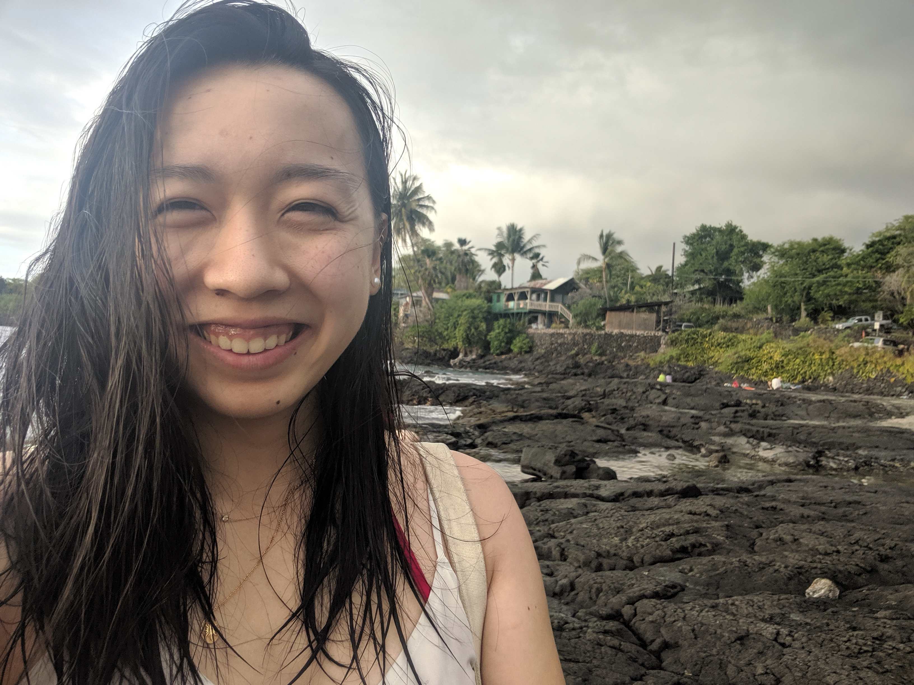

about me
I grew up in Cupertino, graduated from UC Berkeley, and now live in San Francisco, so you could definitely say I'm a Bay Area girl.
I love cooking, reading, yoga, math, trivia, crosswords, and biking! I'm hoping this space will be a fun way for me to share some of the things I'm passionate about with the world.
While I am a full time software engineer, I have minimal front end experience and am putting together this website as a way to learn more about web development as well as exercise my creativity. We'll see how this goes!
